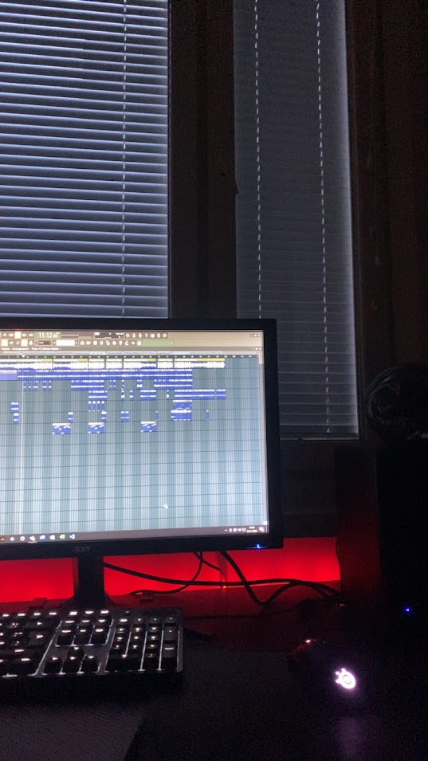
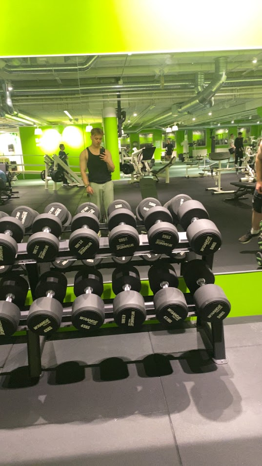

⚽ Liikunta
Olen harrastanut painonnostoa kuntosalilla yläasteikäisestä asti. Käyn treenaamassa säännöllisesti 4-5 kertaa viikossa, tavoitteenani hyvän fysiikan ja terveyden ylläpitäminen. Harrastan myös höntsäillen joukkuelajeja kuten jalkapalloa, koripalloa ja jääkiekkoa säännöllisesti kaveriporukoiden kesken.🎵 Musiikki
Aloin tuottamaan itse musiikkia ystävästäni inspiroituneena 13-vuotiaana, ja monitorien jumputuksessa kuluukin aikaa edelleen useampana päivänä viikossa. Pääasiassa olen keskittynyt tuottamiseen muille, sillä olen tuottajana ja miksaajana melko kovalla tasolla, mutta olen myös kirjoittanut ja äänittänyt omaa musiikkia.🎮 Videopelit
Aloin pelaamaan videopelejä jo taaperoikäisenä isäni kanssa. Syvempää ymmärrystä tietotekniikasta aloinkin saamaan yläasteikäisenä pelien ansiosta, kun koodailin Counter-Strike-apuohjelmia. Vaikka pelaamiseen jää nykyään vähemmän aikaa muiden kiireiden vuoksi, on se silti edelleen mieluinen harrastus.



Kuvia harrastuksistani